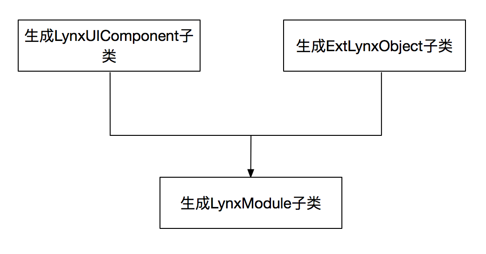

Lynx JS Java层拓展实现分析
1. 概述
之前的文章介绍了通过Java层拓展JS功能的姿势。根据前面的介绍，我们只需要收集对应需要注册的类和方法，然后利用这些元数据依照JavaScript Bridge的规则生成对应的绑定即可达到拓展JS的效果。下面我们就对这些环节展开描述，其中类和方法信息的汇总是其中的关键点。
2. 类和方法的信息的归集
通过JS方法能够调用到Java方法上就需要建立JS引擎和Java之间的联系。因此我们实现的第一步就是找到JS需要使用的Java模块和方法。通常一种方法是我们可以将需要被调用的Java类放入对应的集合中，然后依赖反射找到约定注解的方法。另一种方法新增一个类然后，将对应的类和被调用方法写入其中。两种方案比较起来，第一种需要使用反射来完成，第二种则会带来重复性的工作。Lynx选择新增类的第二种方式，但是通过APT的方式来增加避免了重复的工作。
2.1 代码生成介绍
Javapoet是我们用来生成Java代码和修改字节码的工具。譬如我们需要生成一个下面的HelloWorld的类：
package com.example.helloworld;
public final class HelloWorld {
public static void main(String[] args) {
System.out.println("Hello, JavaPoet!");
}
}
对应的JavaPoet生成代码则是这样的：
MethodSpec main = MethodSpec.methodBuilder("main")
.addModifiers(Modifier.PUBLIC, Modifier.STATIC)
.returns(void.class)
.addParameter(String[].class, "args")
.addStatement("$T.out.println($S)", System.class, "Hello, JavaPoet!")
.build();
TypeSpec helloWorld = TypeSpec.classBuilder("HelloWorld")
.addModifiers(Modifier.PUBLIC, Modifier.FINAL)
.addMethod(main)
.build();
JavaFile javaFile = JavaFile.builder("com.example.helloworld", helloWorld)
.build();
javaFile.writeTo(System.out);
其中TypeSpec对应的是生成类的，MethodSpec对应的是生成方法，FieldSpec对应的是生成属性。MethodSpec的addStatement为在方法内增加相应的代码。另外JavaPoet在代码语句生成时还支持通配符的方式。如$L代表的是字面量，$S代表的是字符串，$T则为对应的类型。更多的JavaPoet介绍则可以参考这里。有了生成工具，接下来我们要解决的是何时生成和生成那些内容。
Javac在编译Java字节码时支持-processor的参数编译，可以依据设定的AbstractProcessor子类来处理生成逻辑。Android的编译过程在gradle中使用annotationProcess的方式支持Javac的processor机制，这样我们就解决了何时生成的问题了。另外AbstractProcessor#getSupportedAnnotationTypes通过重载设定需要处理的注解。我们就可以得到标记注解的类，根据这些信息我们就可以由AbstractProcessor#process来生成我们想要的内容。
2.2 组件生成
com.lynx.apt.process.ComponentProcess为生成代码的AbstractProcessor，其中process方法主要完成如下的工作： 
2.2.1 JS组件生成
在需要拓展的类添加@JSObject注解，以及给需要的方法增加@JSMethod。如PageNavigator类
@JSObject
public class PageNavigator extends JSComponent {
private static final String DEFAULT_SCHEME = "lynx://";
private Context mContext;
public PageNavigator(LynxRuntime runtime) {
super(runtime);
mContext = runtime.getContext();
}
@JSMethod
public void startNewPage(String page) {
Bundle bundle = new Bundle();
bundle.putString("page", page);
Intent intent = new Intent(Intent.ACTION_VIEW, Uri.parse(DEFAULT_SCHEME + page));
intent.putExtras(bundle);
mContext.startActivity(intent);
}
}
apt会为其生成对应的对应的辅助类
public class PageNavigatorComponent extends ExtLynxObject {
public PageNavigatorComponent(JSComponent component) {
super(component);
}
@Override
public void initWithReceiver(Object receiver) {
mReceiver = receiver;
mMethodNameArray = new com.lynx.core.base.LynxArray();
mMethodNameArray.add("startNewPage");
}
public Object exec(String methodName, Object[] args) {
if("startNewPage".equals(methodName)) {
if(args!=null & args.length == 1) {
if(args[0] instanceof java.lang.String) {
((com.lynx.modules.PageNavigator)mComponent).startNewPage((java.lang.String)args[0]);
return null;
}
}
}
return super.exec(methodName, args);
}
}
其中PageNavigatorComponent构造函数传入的component则为PageNavigator的实例。initWithReceiver中生成注入的方法名，exec方法则会生成根据参数类型和方法名路由到被注解标记的方法。
2.2.2 UI组件生成
UI组件在需要拓展的类添加@UIComponent和@JSMethod则可增加对应的注解，如LynxUILabel所示
@UIComponent(type = UI_TYPE_LABEL,tag = "label")
public class LynxUILabel extends LynxUI<AndroidLabel> {
public LynxUILabel(Context context, RenderObjectImpl impl) {
super(context, impl);
}
@Override
public void setData(int attr, Object param) {
if(attr == TEXT_LAYOUT.value()) {
mView.invalidate();
}
super.setData(attr, param);
}
@JSMethod
public void test(String tt){
Log.e("@@@",tt);
}
}
自动生成的LynxUILabelComponent如下所示
package com.lynx.ui.label;
import android.content.Context;
import com.lynx.core.impl.RenderObjectImpl;
import com.lynx.modules.ext.LynxUIComponent;
import com.lynx.ui.LynxUI;
import java.lang.Object;
import java.lang.Override;
public class LynxUILabelComponent extends LynxUIComponent {
@Override
public LynxUI createExtLynxUI(Context context, RenderObjectImpl impl) {
return new com.lynx.ui.label.LynxUILabel(context,impl);
}
@Override
public void registerMethodSpecList() {
com.lynx.utils.RegisterUtil.nativeRegisterJSMethod(2,"test",3556498);
}
@Override
public void dispatchJSMethodWithId(LynxUI ui, int id, Object param) {
if(id == 3556498) {
com.lynx.core.base.LynxArray args =(com.lynx.core.base.LynxArray) param;
if(args!=null & args.length() == 1) {
if(args.get(0) instanceof java.lang.String) {
((com.lynx.ui.label.LynxUILabel) ui).test((java.lang.String)args.get(0));
}
}
}
}
}
其中@JSMethod的注解可以设置一个id用于回调到UI线程时方法的派发。没设置id时，使用方法名的hashcode为id的值。其中dispatchJSMethodWithId会根据注解生成对应的调用逻辑。
2.3 模块的生成
一个module工程内所有生成的JS和UI组件的信息会被汇总然后生成到一个模块内
public class LynxExtModule extends LynxModule {
@Override
public Map<Integer, LynxUIComponent> createUIComponents() {
java.util.HashMap<Integer, LynxUIComponent> map = new java.util.HashMap<>();
com.lynx.ui.label.LynxUILabelComponent component0 = new com.lynx.ui.label.LynxUILabelComponent();
component0.registerMethodSpecList();
map.put(2, component0);
com.lynx.utils.RegisterUtil.nativeRegisterTag(2,"label");
return map;
}
@Override
public void registerFunctionObject(LynxRuntime runtime) {
com.lynx.modules.CoordinatorRegisterComponent component0 = new com.lynx.modules.CoordinatorRegisterComponent(new com.lynx.modules.CoordinatorRegister(runtime));
runtime.registerModule(component0, "CoordinatorRegister");
com.lynx.modules.PageNavigatorComponent component1 = new com.lynx.modules.PageNavigatorComponent(new com.lynx.modules.PageNavigator(runtime));
runtime.registerModule(component1, "PageNavigator");
}
}
其中createUIComponents会生成注入UI组件代码，registerFunctionObject注入的是JS组件的内容。
3. 注入和调用
通过上述生成的代码我们可以看到JS模块基本注入流程为生成ExtLynxObject，LynxModule子类，LynxModule子类生成registerFunctionObject方法会创建出JSComponent和ExtLynxObject实例，注入runtime。其中runtime#registerModule以JNI的方式按照JSBridge规则新增方法，这些方法最终会通过JSComponent#exec分发到需要使用的方法。
被@JSMethod注解的方法运行在UI线程上，因此发起JS的调用可以看做一个RPC过程。生成LynxUIComponent的子类通过registerMethodSpecList依次调用RegisterUtil#nativeRegisterJSMethod注入标签类型，方法名和方法id到C++的Element::s_rpc_methods静态属性中。Element会在构造函数实例化时会根据标签类型从s_rpc_methods中取出相应的方法集拓展JS方法，添加的JS拓展方法会调用到RenderObject::SetData方法，通过消息队列派发到UI线程的LynxUI#setData。LynxUI#setData方法中调用了ModuleManager#callById，通过在gUIComponents查找到LynxUIComponent最终由dispatchJSMethodWithId路由到被注解的方法。ModuleManager的gUIComponents在Runtime#prepare时将所有生成的LynxModule模块都注入进去(注：xxx::xxx对应的C++方面的调用，xxx#xxx为Java端的调用)。
UI组件一方面支持方法上的拓展，同时也可以新增JS端的UI标签。LynxModule子类的createUIComponents调用RegisterUtil#nativeRegisterTag，可以给Element::s_element_tags添加tagtype和tagname。在RenderFactory::CreateRenderObject时若无匹配的tag，则会通过Element::s_element_tags查找并创建一个ExtendedView的RenderObject达到新增标签的目的。相应地LynxUIFactory方面也会以ModuleManager#createExtLynxUI新增LynxUI。
以上就是整个Java拓展JS调用的全部过程了。